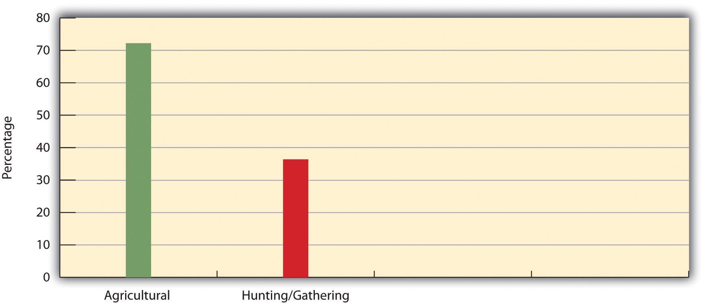
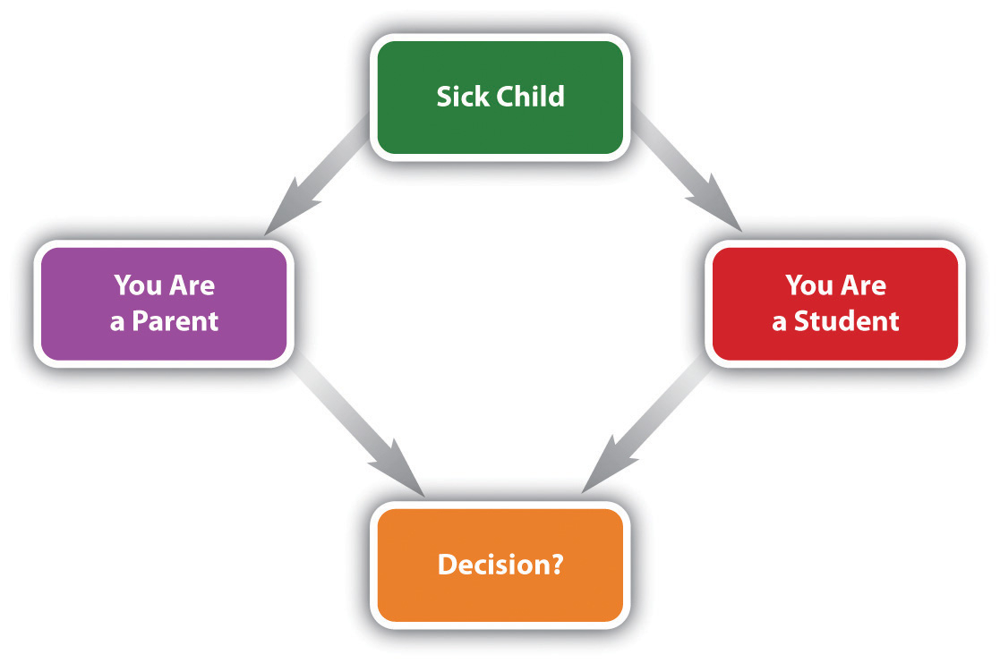

“He’s Not a Patient, but Plays One for Class,” the headline said. For 12 days in July 2010, a 24-year-old medical student named Matt entered a nursing home in Chelsea, Massachusetts, to play the role of an 85-year-old man bound to a wheelchair and suffering from several serious health problems. He and five other medical students were staying in the facility to get a better idea of how to care for the elderly.
Matt kept a daily journal and wrote regularly of the problems of using his wheelchair, among other topics. One day he wrote, “I never really noticed how hard it is to live like this. I just always thought of old people as grumpy people who are easily upset.” He had trouble reaching a TV remote control or reading a notice that was posted too high. When he first showered in his wheelchair, he was unable to turn it to be able to wash the right side of his body. He was so embarrassed to ask for help in going to the bathroom that he tried to spread out his bathroom trips so that the same nurse would not have to help him twice in a row.
The experience taught Matt a lot about how to care not only for older patients but also for patients in general. The emotional bonds he developed with other patients during his time in the nursing home particularly made him realize how he should interact with patients. As Matt wrote in his journal, “There is a face and story behind every patient. The patient should not be viewed by the conditions that ail them, but by the person beneath the disease.” (Wu, 2010)Wu, J. Q. (2010, July 19). He’s not a patient, but plays one for class. The Boston Globe, p. B1.
The status of an 85-year-old man bound to a wheelchair is very different from that of a medical student. So are our views of people in each status and our expectations of their behavior. Matt quickly learned what life in a wheelchair is like and realized that his stereotypical views of older people could easily complicate his medical interactions with them. The setting in which he played the role of a very old man was an institutional setting, but this setting was also one tiny component of the vast social institution that sociologists call medicine.
In all these ways, Matt’s brief experience in the nursing home illuminates important aspects of social structure and social interaction in today’s society. The statuses we occupy and the roles we play in these statuses shape our lives in fundamental ways and affect our daily interactions with other people. The many social institutions that are so important in modern society affect our lives profoundly from the moment we are born. This chapter examines major aspects of social structure and social interaction. As with Chapter 3 "Culture" and Chapter 4 "Socialization", this chapter should help you further understand yourself as a social being and not just as an individual. This in turn means it should further help you understand how and why you came to be the person you are.
Social life is composed of many levels of building blocks, from the very micro to the very macro. These building blocks combine to form the social structure. As Chapter 1 "Sociology and the Sociological Perspective" explained, social structureThe social patterns through which a society is organized; can be horizontal or vertical. refers to the social patterns through which a society is organized and can be horizontal or vertical. To recall, horizontal social structure refers to the social relationships and the social and physical characteristics of communities to which individuals belong, while vertical social structure, more commonly called social inequalityThe ways in which a society or group ranks people in a hierarchy., refers to ways in which a society or group ranks people in a hierarchy. This chapter’s discussion of social structure focuses primarily on horizontal social structure, while Chapter 8 "Social Stratification" through Chapter 12 "Aging and the Elderly", as well as much material in other chapters, examine dimensions of social inequality. The (horizontal) social structure comprises several components, to which we now turn, starting with the most micro and ending with the most macro. Our discussion of social interaction in the second half of this chapter incorporates several of these components.
StatusThe position that someone occupies in society. has many meanings in the dictionary and also within sociology, but for now we will define it as the position that someone occupies in society. This position is often a job title, but many other types of positions exist: student, parent, sibling, relative, friend, and so forth. It should be clear that status as used in this way conveys nothing about the prestige of the position, to use a common synonym for status. A physician’s job is a status with much prestige, but a shoeshiner’s job is a status with no prestige.
Any one individual often occupies several different statuses at the same time, and someone can simultaneously be a banker, Girl Scout troop leader, mother, school board member, volunteer at a homeless shelter, and spouse. This someone would be very busy! We call all the positions an individual occupies that person’s status setAll the positions an individual occupies. (see Figure 5.1 "Example of a Status Set").
Figure 5.1 Example of a Status Set

Sociologists usually speak of three types of statuses. The first type is ascribed statusThe status that someone is born with and has no control over., which is the status that someone is born with and has no control over. There are relatively few ascribed statuses; the most common ones are our biological sex, race, parents’ social class and religious affiliation, and biological relationships (child, grandchild, sibling, and so forth).
The second kind of status is called achieved statusA status achieved at some point after birth, sometimes through one’s own efforts and sometimes because of good or bad luck., which, as the name implies, is a status you achieve, at some point after birth, sometimes through your own efforts and sometimes because good or bad luck befalls you. The status of student is an achieved status, as is the status of restaurant server or romantic partner, to cite just two of the many achieved statuses that exist.
Two things about achieved statuses should be kept in mind. First, our ascribed statuses, and in particular our sex, race and ethnicity, and social class, often affect our ability to acquire and maintain many achieved statuses (such as college graduate). Second, achieved statuses can be viewed positively or negatively. Our society usually views achieved statuses such as physician, professor, or college student positively, but it certainly views achieved statuses such as burglar, prostitute, and pimp negatively.
The third type of status is called a master statusA status that is so important that it overrides other statuses a person may hold.. This is a status that is so important that it overrides other statuses you may hold. In terms of people’s reactions, master statuses can be either positive or negative for an individual depending on the particular master status they hold. Barack Obama now holds the positive master status of president of the United States: his status as president overrides all the other statuses he holds (husband, father, and so forth), and millions of Americans respect him, whether or not they voted for him or now favor his policies, because of this status. Many other positive master statuses exist in the political and entertainment worlds and in other spheres of life.
Some master statuses have negative consequences. To recall the medical student and nursing home news story that began this chapter, a physical disability often becomes such a master status. If you are bound to a wheelchair, for example, this fact becomes more important than the other statuses you have and may prompt people to perceive and interact with you negatively. In particular, they perceive you more in terms of your master status (someone bound to a wheelchair) than as the “person beneath” the master status, to cite Matt’s words. For similar reasons, gender, race, and sexual orientation may also be considered master statuses, as these statuses often subject women, people of color, and gays and lesbians, respectively, to discrimination and other problems, no matter what other statuses they may have.
Whatever status we occupy, certain objects signify any particular status. These objects are called status symbolsAn object that signifies a particular status that a person holds.. In popular terms, status symbol usually means something like a Rolls-Royce or BMW that shows off someone’s wealth or success, and many status symbols of this type exist. But sociologists use the term more generally than that. For example, the wheelchair that Matt the medical student rode for 12 days was a status symbol that signified his master status of someone with a (feigned) disability. If someone is pushing a stroller, the stroller is a status symbol that signifies that the person pushing it is a parent or caretaker of a young child.
Whatever its type, every status is accompanied by a roleThe behavior expected of someone with a certain status., which is the behavior expected of someone—and in fact everyone—with a certain status. You and most other people reading this book are students. Despite all the other differences among you, you have at least this one status in common. As such, there is a role expected of you as a student (at least by your professors); this role includes coming to class regularly, doing all the reading assigned from this textbook, and studying the best you can for exams. Roles for given statuses existed long before we were born, and they will continue long after we are no longer alive. A major dimension of socialization is learning the roles our society has and then behaving in the way a particular role demands.
Because roles are the behavior expected of people in various statuses, they help us interact because we are familiar with the roles in the first place, a point to which the second half of this chapter returns. Suppose you are shopping in a department store. Your status is a shopper, and the role expected of you as a shopper—and of all shoppers—involves looking quietly at various items in the store, taking the ones you want to purchase to a checkout line, and paying for them. The person who takes your money is occupying another status in the store that we often call a cashier. The role expected of that cashier—and of all cashiers not only in that store but in every other store—is to accept your payment in a businesslike way and put your items in a bag. Because shoppers and cashiers all have these mutual expectations, their social interaction is possible.
Modern life seems increasingly characterized by social networks. A social networkThe totality of relationships that link us to other people and groups and through them to still other people and groups. is the totality of relationships that link us to other people and groups and through them to still other people and groups. As Facebook and other social media show so clearly, social networks can be incredibly extensive. Social networks can be so large, of course, that an individual in a network may know little or nothing of another individual in the network (e.g., a friend of a friend of a friend of a friend). But these “friends of friends” can sometimes be an important source of practical advice and other kinds of help. They can “open doors” in the job market, they can introduce you to a potential romantic partner, they can pass through some tickets to the next big basketball game. As a key building block of social structure, social networks receive a fuller discussion in Chapter 6 "Groups and Organizations".
Groups and organizations are the next component of social structure. Because Chapter 6 "Groups and Organizations" discusses groups and organizations extensively, here we will simply define them and say one or two things about them.
A social groupTwo or more people who regularly interact on the basis of mutual expectations and who share a common identity. (hereafter just group) consists of two or more people who regularly interact on the basis of mutual expectations and who share a common identity. To paraphrase John Donne, the 17th-century English poet, no one is an island; almost all people are members of many groups, including families, groups of friends, and groups of coworkers in a workplace. Sociology is sometimes called the study of group life, and it is difficult to imagine a modern society without many types of groups and a small, traditional society without at least some groups.
In terms of size, emotional bonding, and other characteristics, many types of groups exist, as Chapter 6 "Groups and Organizations" explains. But one of the most important types is the formal organizationA large group that follows explicit rules and procedures to achieve specific goals and tasks. (also just organization), which is a large group that follows explicit rules and procedures to achieve specific goals and tasks. For better and for worse, organizations are an essential feature of modern societies. Our banks, our hospitals, our schools, and so many other examples are all organizations, even if they differ from one another in many respects. In terms of their goals and other characteristics, several types of organizations exist, as Chapter 6 "Groups and Organizations" will again discuss.
Yet another component of social structure is the social institutionPatterns of beliefs and behavior that help a society meet its basic needs., or patterns of beliefs and behavior that help a society meet its basic needs. Modern society is filled with many social institutions that all help society meet its needs and achieve other goals and thus have a profound impact not only on the society as a whole but also on virtually every individual in a society. Examples of social institutions include the family, the economy, the polity (government), education, religion, and medicine. Chapter 13 "Work and the Economy" through Chapter 18 "Health and Medicine" examine each of these social institutions separately.
As those chapters will show, these social institutions all help the United States meet its basic needs, but they also have failings that prevent the United States from meeting all its needs. A particular problem is social inequality, to recall the vertical dimension of social structure, as our social institutions often fail many people because of their social class, race, ethnicity, gender, or all four. These chapters will also indicate that American society could better fulfill its needs if it followed certain practices and policies of other democracies that often help their societies “work” better than our own.
The largest component of social structure is, of course, societyA group of people who live within a defined territory and who share a culture. itself. Chapter 1 "Sociology and the Sociological Perspective" defined society as a group of people who live within a defined territory and who share a culture. Societies certainly differ in many ways; some are larger in population and some are smaller, some are modern and some are less modern. Since the origins of sociology during the 19th century, sociologists have tried to understand how and why modern, industrial society developed. Part of this understanding involves determining the differences between industrial societies and traditional ones.
One of the key differences between traditional and industrial societies is the emphasis placed on the community versus the emphasis placed on the individual. In traditional societies, community feeling and group commitment are usually the cornerstones of social life. In contrast, industrial society is more individualistic and impersonal. Whereas the people in traditional societies have close daily ties, those in industrial societies have many relationships in which one person barely knows the other person. Commitment to the group and community become less important in industrial societies, and individualism becomes more important.
Sociologist Ferdinand Tönnies (1887/1963)Tönnies, F. (1963). Community and society. New York, NY: Harper and Row. (Original work published 1887) long ago characterized these key characteristics of traditional and industrial societies with the German words Gemeinschaft and Gesellschaft. GemeinschaftA human community, particularly a small society with a strong sense of community and strong group ties. means human community, and Tönnies said that a sense of community characterizes traditional societies, where family, kin, and community ties are quite strong. As societies grew and industrialized and as people moved to cities, Tönnies said, social ties weakened and became more impersonal. Tönnies called this situation GesellschaftA large society characterized by weak and impersonal social ties. and found it dismaying. Chapter 5 "Social Structure and Social Interaction", Section 5.2 "The Development of Modern Society" discusses the development of societies in more detail.
To help understand how modern society developed, sociologists find it useful to distinguish societies according to their type of economy and technology. One of the most useful schemes distinguishes the following types of societies: hunting-and-gathering, horticultural, pastoral, agricultural, and industrial (Nolan & Lenski, 2009).Nolan, P., & Lenski, G. (2009). Human societies: An introduction to macrosociology (11th ed.). Boulder, CO: Paradigm. Some scholars add a final type, postindustrial, to the end of this list. We now outline the major features of each type in turn. Table 5.1 "Summary of Societal Development" summarizes these features.
Table 5.1 Summary of Societal Development
| Type of society | Key characteristics |
|---|---|
| Hunting-and-gathering | These are small, simple societies in which people hunt and gather food. Because all people in these societies have few possessions, the societies are fairly egalitarian, and the degree of inequality is very low. |
| Horticultural and pastoral | Horticultural and pastoral societies are larger than hunting-and-gathering societies. Horticultural societies grow crops with simple tools, while pastoral societies raise livestock. Both types of societies are wealthier than hunting-and-gathering societies, and they also have more inequality and greater conflict than hunting-and-gathering societies. |
| Agricultural | These societies grow great numbers of crops, thanks to the use of plows, oxen, and other devices. Compared to horticultural and pastoral societies, they are wealthier and have a higher degree of conflict and of inequality. |
| Industrial | Industrial societies feature factories and machines. They are wealthier than agricultural societies and have a greater sense of individualism and a somewhat lower degree of inequality that still remains substantial. |
| Postindustrial | These societies feature information technology and service jobs. Higher education is especially important in these societies for economic success. |
Beginning about 250,000 years ago, hunting-and-gathering societiesSocieties of a few dozen members whose food is obtained from hunting animals and gathering plants and vegetation. are the oldest ones we know of; few of them remain today, partly because modern societies have encroached on their existence. As the name hunting-and-gathering implies, people in these societies both hunt for food and gather plants and other vegetation. They have few possessions other than some simple hunting-and-gathering equipment. To ensure their mutual survival, everyone is expected to help find food and also to share the food they find. To seek their food, hunting-and-gathering peoples often move from place to place. Because they are nomadic, their societies tend to be quite small, often consisting of only a few dozen people.
Beyond this simple summary of the type of life these societies lead, anthropologists have also charted the nature of social relationships in them. One of their most important findings is that hunting-and-gathering societies are fairly egalitarian. Although men do most of the hunting and women most of the gathering, perhaps reflecting the biological differences between the sexes discussed earlier, women and men in these societies are roughly equal. Because hunting-and-gathering societies have few possessions, their members are also fairly equal in terms of wealth and power, as virtually no wealth exists.
Horticultural and pastoral societies both developed about 10,000–12,000 years ago. In horticultural societiesSocieties that use hoes and other simple tools to raise small amounts of crops., people use hoes and other simple hand tools to raise crops. In pastoral societiesSocieties that raise livestock as their primary source of food., people raise and herd sheep, goats, camels, and other domesticated animals and use them as their major source of food and also, depending on the animal, as a means of transportation. Some societies are either primarily horticultural or pastoral, while other societies combine both forms. Pastoral societies tend to be at least somewhat nomadic, as they often have to move to find better grazing land for their animals. Horticultural societies, on the other hand, tend to be less nomadic, as they are able to keep growing their crops in the same location for some time. Both types of societies often manage to produce a surplus of food from vegetable or animal sources, respectively, and this surplus allows them to trade their extra food with other societies. It also allows them to have a larger population size than hunting-and-gathering societies that often reaches several hundred members.
Accompanying the greater complexity and wealth of horticultural and pastoral societies is greater inequality in terms of gender and wealth than is found in hunting-and-gathering societies. In pastoral societies, wealth stems from the number of animals a family owns, and families with more animals are wealthier and more powerful than families with fewer animals. In horticultural societies, wealth stems from the amount of land a family owns, and families with more land are wealthier and more powerful.
One other side effect of the greater wealth of horticultural and pastoral societies is greater conflict. As just mentioned, sharing of food is a key norm in hunting-and-gathering societies. In horticultural and pastoral societies, however, wealth (and more specifically, the differences in wealth) leads to disputes and even fighting over land and animals. Whereas hunting-and-gathering peoples tend to be very peaceful, horticultural and pastoral peoples tend to be more aggressive.
Agricultural societiesSocieties that cultivate large amounts of crops with plows and other relatively advanced tools and equipment. developed some 5,000 years ago in the Middle East, thanks to the invention of the plow. When pulled by oxen and other large animals, the plow allowed for much more cultivation of crops than the simple tools of horticultural societies permitted. The wheel was also invented about the same time, and written language and numbers began to be used. The development of agricultural societies thus marked a watershed in the development of human society. Ancient Egypt, China, Greece, and Rome were all agricultural societies, and India and many other large nations today remain primarily agricultural.
We have already seen that the greater food production of horticultural and pastoral societies led them to become larger than hunting-and-gathering societies and to have more trade and greater inequality and conflict. Agricultural societies continue all these trends. First, because they produce so much more food than horticultural and pastoral societies, they often become quite large, with their numbers sometimes reaching into the millions. Second, their huge food surpluses lead to extensive trade, both within the society itself and with other societies. Third, the surpluses and trade both lead to degrees of wealth unknown in the earlier types of societies and thus to unprecedented inequality, exemplified in the appearance for the first time of peasants, people who work on the land of rich landowners. Finally, agricultural societies’ greater size and inequality also produce more conflict. Some of this conflict is internal, as rich landowners struggle with each other for even greater wealth and power, and peasants sometimes engage in revolts. Other conflict is external, as the governments of these societies seek other markets for trade and greater wealth.
If gender inequality becomes somewhat greater in horticultural and pastoral societies than in hunting-and-gathering ones, it becomes very pronounced in agricultural societies. An important reason for this is the hard, physically taxing work in the fields, much of it using large plow animals, that characterizes these societies. Then, too, women are often pregnant in these societies, because large families provide more bodies to work in the fields and thus more income. Because men do more of the physical labor in agricultural societies—labor on which these societies depend—they have acquired greater power over women (Brettell & Sargent, 2009).Brettell, C. B., & Sargent, C. F. (Eds.). (2009). Gender in cross-cultural perspective (5th ed.). Upper Saddle River, NJ: Prentice Hall. In the Standard Cross-Cultural Sample, agricultural societies are much more likely than hunting-and-gathering ones to believe men should dominate women (see Figure 5.2 "Type of Society and Presence of Cultural Belief That Men Should Dominate Women").
Figure 5.2 Type of Society and Presence of Cultural Belief That Men Should Dominate Women
Source: Data from Standard Cross-Cultural Sample.
Industrial societiesLarge societies that rely on machines and factories as their primary modes of economic production. emerged in the 1700s as the development of machines and then factories replaced the plow and other agricultural equipment as the primary mode of production. The first machines were steam- and water-powered, but eventually, of course, electricity became the main source of power. The growth of industrial societies marked such a great transformation in many of the world’s societies that we now call the period from about 1750 to the late 1800s the Industrial Revolution. This revolution has had enormous consequences in almost every aspect of society, some for the better and some for the worse.
On the positive side, industrialization brought about technological advances that improved people’s health and expanded their life spans. As noted earlier, there is also a greater emphasis in industrial societies on individualism, and people in these societies typically enjoy greater political freedom than those in older societies. Compared to agricultural societies, industrial societies also have lowered economic and gender inequality. In industrial societies, people do have a greater chance to pull themselves up by their bootstraps than was true in earlier societies, and rags-to-riches stories continue to illustrate the opportunity available under industrialization. That said, we will see in later chapters that economic and gender inequality remains substantial in many industrial societies.
On the negative side, industrialization meant the rise and growth of large cities and concentrated poverty and degrading conditions in these cities, as the novels of Charles Dickens poignantly remind us. This urbanization changed the character of social life by creating a more impersonal and less traditional Gesellschaft society. It also led to riots and other urban violence that, among other things, helped fuel the rise of the modern police force and forced factory owners to improve workplace conditions. Today industrial societies consume most of the world’s resources, pollute its environment to an unprecedented degree, and have compiled nuclear arsenals that could undo thousands of years of human society in an instant.
We are increasingly living in what has been called the information technology age (or just information age), as wireless technology vies with machines and factories as the basis for our economy. Compared to industrial economies, we now have many more service jobs, ranging from housecleaning to secretarial work to repairing computers. Societies in which this transition is happening are moving from an industrial to a postindustrial phase of development. In postindustrial societiesSocieties in which information technology and service jobs have replaced machines and manufacturing jobs as the primary dimension of the economy., then, information technology and service jobs have replaced machines and manufacturing jobs as the primary dimension of the economy (Bell, 1999).Bell, D. (Ed.). (1999). The coming of post-industrial society: A venture in social forecasting. New York, NY: Basic Books. If the car was the sign of the economic and social times back in the 1920s, then the smartphone or netbook/laptop is the sign of the economic and social future in the early years of the 21st century. If the factory was the dominant workplace at the beginning of the 20th century, with workers standing at their positions by conveyor belts, then cell phone, computer, and software companies are dominant industries at the beginning of the 21st century, with workers, almost all of them much better educated than their earlier factory counterparts, huddled over their wireless technology at home, at work, or on the road. In short, the Industrial Revolution has been replaced by the Information Revolution, and we now have what has been called an information society (Hassan, 2008).Hassan, R. (2008). The information society: Cyber dreams and digital nightmares. Malden, MA: Polity.
As part of postindustrialization in the United States, many manufacturing companies have moved their operations from U.S. cities to overseas sites. Since the 1980s, this process has raised unemployment in cities, many of whose residents lack the college education and other training needed in the information sector. Partly for this reason, some scholars fear that the information age will aggravate the disparities we already have between the “haves” and “have-nots” of society, as people lacking a college education will have even more trouble finding gainful employment than they do now (W. J. Wilson, 2009).Wilson, W. J. (2009). The economic plight of inner-city black males. In E. Anderson (Ed.), Against the wall: Poor, young, black, and male (pp. 55–70). Philadelphia: University of Pennsylvania Press. In the international arena, postindustrial societies may also have a leg up over industrial or, especially, agricultural societies as the world moves ever more into the information age.
A fundamental feature of social life is social interactionThe ways in which people act with other people and react to how other people are acting., or the ways in which people act with other people and react to how other people are acting. To recall our earlier paraphrase of John Donne, no one is an island. This means that all individuals, except those who choose to live truly alone, interact with other individuals virtually every day and often many times in any one day. For social order, a prerequisite for any society, to be possible, effective social interaction must be possible. Partly for this reason, sociologists interested in microsociology have long tried to understand social life by analyzing how and why people interact they way they do. This section draws on their work to examine various social influences on individual behavior. As you read this section, you will probably be reading many things relevant to your own social interaction.
Chapter 4 "Socialization" emphasized that socialization results from our social interaction. The reverse is also true: we learn how to interact from our socialization. We have seen many examples of this process in earlier chapters. Among other things, we learn from our socialization how far apart to stand when talking to someone else, we learn to enjoy kissing, we learn how to stand and behave in an elevator, and we learn how to behave when we are drunk. Perhaps most important for the present discussion, we especially learn our society’s roles, outlined earlier as a component of social structure. The importance of roles for social interaction merits further discussion here.
Our earlier discussion of roles defined them as the behaviors expected of people in a certain status. Regardless of our individual differences, if we are in a certain status, we are all expected to behave in a way appropriate to that status. Roles thus help make social interaction possible.
As our example of shoppers and cashiers was meant to suggest, social interaction based on roles is usually very automatic, and we often perform our roles without thinking about them. This, in fact, is why social interaction is indeed possible: if we always had to think about our roles before we performed them, social interaction would be slow, tedious, and fraught with error. (Analogously, if actors in a play always had to read the script before performing their lines, as an understudy sometimes does, the play would be slow and stilted.) It is when people violate their roles that the importance of roles is thrown into sharp relief. Suppose you were shopping in a department store, and while you were in the checkout line the cashier asked you how your sex life has been! Now, you might expect such an intimate question from a very close friend, because discussions of intimate matters are part of the roles close friends play, but you would definitely not expect it from a cashier you do not know.
As this example suggests, effective social interaction rests on shared background assumptionsOur understanding of the roles expected of people in a given encounter., or our understanding of the roles expected of people in a given encounter, that are easily violated if one has the nerve to do so. If they are violated, social order might well break down, as you would quickly find if you dared to ask your cashier how her or his sex life has been, or if two students sitting in class violated their student role by kissing each other passionately. Sociologist Harold Garfinkel (1967)Garfinkel, H. (1967). Studies in ethnomethodology. Cambridge, England: Polity Press. argued that unexpected events like these underscore how fragile social order is and remind us that people are constantly constructing the social reality of the situations in which they find themselves. To illustrate his point, he had his students perform a series of experiments, including acting like a stranger in their parents’ home. Not surprisingly, their parents quickly became flustered and wondered what college was doing to their daughters and sons!
These examples indicate that social reality is to a large extent socially constructed. It is what we make of it, and individuals who interact help construct the reality of the situation in which they interact. Sociologists refer to this process as the social construction of realityThe process by which individuals understand and create reality through their interaction with other individuals. (Berger & Luckmann, 1963).Berger, P., & Luckmann, T. (1963). The social construction of reality. New York, NY: Doubleday. Although we usually come into a situation with shared understandings of what is about to happen, as the interaction proceeds the actors continue to define the situation and thus to construct its reality. This view lies at the heart of the symbolic interactionist perspective and helps us understand how and why roles (or to be more precise, our understanding of what behavior is expected of someone in a certain status) make social interaction possible.
Roles help us interact and help make social order possible, but they may even shape our personalities. The idea here is that if we assume a new role, the expectations of that role can change how we interact with others and even the way we think about ourselves. In short, roles can change our personalities.
A telling example of this effect comes from the story of a criminal justice professor from Florida named George Kirkham. In his classes, Kirkham would be critical of the harshness with which police treated suspects and other citizens. One day, some police officers in one of his classes said Kirkham could not begin to understand what it was like being a police officer, and they challenged him to become one. He took up the challenge by gaining admission to a police academy and going through the regular training program for all recruits. Kirkham (1984)Kirkham, G. L. (1984). A professor’s “street lessons.” In R. G. Culbertson (Ed.), “Order under law”: Readings in criminal justice (pp. 77–89). Prospect Heights, IL: Waveland Press. later recounted what happened on his first few days on the job. In one episode, he and his veteran partner went into a bar where an intoxicated patron had been causing trouble. Kirkham politely asked the patron to go with him outside. Evidently surprised by this new police officer’s politeness, the man instead swung at Kirkham and landed a blow. Kirkham could not believe this happened and was forced to subdue his assailant. In another episode, Kirkham and his partner were checking out the driver of a double-parked car. An ugly crowd soon gathered and began making threats. Alarmed, Kirkham opened up his car’s trunk and pulled out a shotgun to keep the crowd away. In recounting this episode, Kirkham wrote that as a professor he quickly would have condemned the police officer he had now become. In a few short days, he had turned from a polite, kind professor into a gruff, angry police officer. His role had changed and, along with it, his personality.
Roles help our interactions run smoothly and automatically and, for better or worse, shape our personalities. But roles can also cause various kinds of problems. One such problem is role conflictThe problems arising when a person has to deal with competing demands on two or more roles that the person is expected to play., which occurs when the roles of our many statuses conflict with each other. For example, say you are a student and also a parent. Your 3-year-old child gets sick. You now have a conflict between your role as a parent and your role as a student. To perform your role as a parent, you should stay home with your sick child. To perform your role as a student, you should go to your classes and take the big exam that had been scheduled weeks ago. What do you do?
Figure 5.3 Example of a Role Conflict
One thing is clear: you cannot perform both roles at the same time. To resolve role conflict, we ordinarily have to choose between one role and the other, which is often a difficult choice to make. In this example, if you take care of your child, you miss your classes and exam; if you go to your classes, you have to leave your child at home alone, an unacceptable and illegal option. Another way to resolve role conflict is to find some alternative that would meet the needs of your conflicting roles. In our sick child example, you might be able to find someone to watch your child until you can get back from classes. It is certainly desirable to find such alternatives, but, unfortunately, they are not always forthcoming. If role conflict becomes too frequent and severe, a final option is to leave one of your statuses altogether. In our example, if you find it too difficult to juggle your roles as parent and student, you could stop being a parent—hardly likely!—or, more likely, take time off from school until your child is older. Most of us in these circumstances would try our best to avoid having to do this.
Another role-related problem is called role strainThe problems arising when a person performing a role has to deal with competing demands on that role.. Here you have one status, and a role associated with it, that is causing problems because of all the demands coming to you from people in other statuses with which your own status is involved. Suppose you were a high school principal. In your one role as a principal, you come into contact with people in several different statuses: teachers, students, custodial and support staff, the superintendent, school board members, the community as a whole, and the news media. These statuses may make competing demands on you in your one role as a principal. If your high school has a dress code, for example, the students may want you to abolish it, the teachers and superintendent may want you to keep it, and maybe the school board would agree with the students. As you try to please all these competing factions, you certainly might experience some role strain!
A third type of role problem occurs when we occupy a status whose role demands a certain type of personality that differs from the one we actually have. Can you imagine a police officer who was afraid of guns? An athlete who was not competitive? A flight attendant who did not like helping people or was afraid of flying? Although most people avoid this type of role problem by not taking on a role to which their personality is ill suited, such problems occur nonetheless. For example, some people who dislike children and do not have the patience to be good parents end up being parents anyway. In another example, your author once knew a new professor who was woefully nervous lecturing in front of students. You might wonder why he became a professor in the first place, but he probably just loved the subject matter so much that he thought he would overcome his nervousness. He did not.
Role strain involves the competing demands placed on someone in a given status from the many people in other statuses. This diagram illustrates the role strain that a high school principal may experience in trying to please teachers, students, and members of other statuses.
From a sociological standpoint, much of our social interaction can be understood by likening it to a performance in a play. As with so many things, Shakespeare said it best when he wrote,
All the world’s a stage,
And all the men and women merely players.
They have their exits and their entrances;
And one man in his time plays many parts. (As You Like It, Act II, Scene 7)
From this perspective, each individual has many parts or roles to play in society, and many of these roles specify how we should interact in any given situation. These roles exist before we are born, and they continue long after we die. The culture of society is thus similar to the script of a play. Just as actors in a play learn what lines to say, where to stand on the stage, how to position their bodies, and so many other things, so do we learn as members of society the roles that specify how we should interact.
This fundamental metaphor was developed and popularized by sociologist Erving Goffman (1959)Goffman, E. (1959). The presentation of self in everyday life. Garden City, NY: Doubleday. in what he called a dramaturgical approachErving Goffman’s metaphor that likens social interaction to a performance in a dramatic production.. By this he meant that we can understand social interaction as if it were a theatrical performance. People who interact are actors on a stage, the things they say and do are equivalent to the parts actors play, and any people who observe their interaction are equivalent to the audience at a play. As sociologists Jonathan H. Turner and Jan E. Stets (2006, p. 26)Turner, J. H., & Stets, J. E. (2006). Sociological theories of human emotions. Annual Review of Sociology, 32, 25–52. summarize this approach, “Individuals are, in essence, dramatic actors on a stage playing parts dictated by culture, and, like all theater, they are given some dramatic license in how they play roles, as long as they do not deviate too far from the emotional script provided by culture.”
Beyond these aspects of his theatrical analogy, Goffman also stressed that the presentation of self guides social interaction just as it guides behavior in a play. Actors in a play, he wrote, aim to act properly, which at a minimum means they need to say their lines correctly and in other ways carry out their parts as they were written. They try to convey the impression of their character the playwright had in mind when the play was written and the director has in mind when the play is presented.
Such impression managementErving Goffman’s term for the process whereby individuals who are interacting try to convey a favorable impression of themselves., Goffman wrote, also guides social interaction in everyday life. When people interact, they routinely try to convey a positive impression of themselves to the people with whom they interact. Our behavior in a job interview differs dramatically (pun intended) from our behavior at a party. The key dimension of social interaction, then, involves trying to manage the impressions we convey to the people with whom we interact. We usually do our best, consciously or unconsciously, to manage the impressions we convey to others and so to evoke from them reactions that will please us.
Goffman wrote about other aspects of social interaction that affect our efforts to manage these impressions. Again using his dramaturgical metaphor, he said that some interaction occurs in the “frontstage,” or front region, while other interaction occurs in the “backstage,” or back region (Goffman, 1959, p. 128).Goffman, E. (1959). The presentation of self in everyday life. Garden City, NY: Doubleday. In a play, of course, the frontstage is what the audience sees and is obviously the location in which the actors are performing their lines. Backstage, they can do whatever they want, and the audience will have no idea of what they are doing (as long as they are quiet). Much of our everyday interaction is on the frontstage, where an audience can see everything we do and hear everything we say. But we also spend a lot of time on the backstage, by ourselves, when we can do and say things in private (such as singing in the shower) that we would not dare do or say in public.
How we dress is also a form of impression management. You are the same person regardless of what clothes you wear, but if you dress for a job interview as you would dress for a party (to use our earlier example), the person interviewing you would get an impression you might not want to convey. If you showed up for a medical visit and your physician were wearing a bathing suit, wouldn’t you feel just a bit uneasy?
Impression Management and Job Interviewing
Erving Goffman’s (1959)Goffman, E. (1959). The presentation of self in everyday life. Garden City, NY: Doubleday. concept of impression management, discussed in the text, is one of the key sociological insights for the understanding of social interaction. One reason the concept has been so useful, and one reason that it interests many college students, is that impression management has so much practical relevance. Anyone who has gone out on a first date or had a job interview can immediately recognize that impression management is something we all do and can immediately realize the importance of effective impression management.
Impression management is important in many settings and situations but perhaps especially important in the job interview. Many scholarly publications and job-hunting manuals emphasize the importance of proper impression management during a job interview, especially an interview for a full-time, well-paying job, as opposed to a fast-food job or something similar (Van Iddekinge, McFarland, & Raymark, 2007).Van Iddekinge, C. H., McFarland, L. A., & Raymark, P. H. (2007). Antecedents of impression management use and effectiveness in a structured interview. Journal of Management, 33, 752–773. The strategies they discuss include impression management involving dress, body language, and other dimensions of social interaction. Interviewing tips they recommend include (a) dressing professionally, (b) showing up early for the interview, (c) shaking hands firmly while smiling and looking the interviewer in the eye, (d) sitting with a comfortable but erect posture without crossing one’s arms, (e) maintaining eye contact with the interviewer throughout the interview, and (f) shaking hands at the end of the interview and saying thank you.
These strategies and tips are probably more familiar to college students from wealthy backgrounds than to working-class people who have not gone to college. Sociologists emphasize the importance of cultural capital, or attitudes, skills, and knowledge that enable people to achieve a higher social status (Bourdieu & Passeron, 1990).Bourdieu, P., & Passeron, J.-C. (1990). Reproduction in education, society and culture. Newbury Park, CA: Sage. People who grow up in poverty or near-poverty, including disproportionate numbers of people of color, are less likely than those who grow up in much wealthier circumstances to possess cultural capital. The attitudes, skills, and knowledge that many college students have and take for granted, including how to conduct oneself during a job interview, are much less familiar to individuals who grow up without cultural capital. To use some sociological language, they know much less about how to manage their impressions during a job interview should they get one and thus are less likely to be hired after an interview.
For this reason, many public and private agencies in poor and working-class communities around the country regularly hold workshops on job interviewing skills. These workshops emphasize strategies similar to those outlined earlier. One of the many organizations that offer these workshops and provides related services is the Los Angeles Urban League (http://www.laul.org/milken-family-literacy-and-youth-training-center) through its Milken Family Literacy and Youth Training Center. According to its Web site, this center “provides a comprehensive system of services of programs and services to assist youth and adults in developing the skills to compete for and obtain meaningful employment.” Much of what the youth and adults who attend its workshops and other programs are learning is impression-management skills that help them find employment. Goffman’s concept is helping make a difference.
Individuals engage in impression management, but so do groups and organizations. Consider the medical visit just mentioned. A physician’s office usually “looks” a certain way. It is clean, it has carpeting, it has attractive furniture, and it has magazines such as People, Time, and Sports Illustrated. Such an office assures patients by conveying the impression that the physician and staff are competent professionals. Imagine that you entered a physician’s office and saw torn carpeting, some broken furniture, and magazines such as Maxim and Playboy. What would be your instant reaction? How soon would you turn around and leave the office? As this fanciful example illustrates, impression management is critically important for groups and organizations as well as for individuals.
Life is filled with impression management. Compare the decor of your favorite fast-food restaurant with that of a very expensive restaurant with which you might be familiar. Compare the appearance, dress, and demeanor of the servers and other personnel in the two establishments. The expensive restaurant is trying to convey an image that the food will be wonderful and that the time you spend there will be memorable and well worth the money. The fast-food restaurant is trying to convey just the opposite impression. In fact, if it looked too fancy, you would probably think it was too expensive.
Some people go to great efforts to manage the impressions they convey. You have probably done so in a job interview or on a date. In New York City, the capital of book publishing, editors of large publishing companies and “superagents” for authors are very conscious of the impressions they convey, because much of the publishing industry depends on gossip, impressions, and the development of rapport. Editors and agents often dine together in one of a few very expensive “power” restaurants, where their presence is certain to be noted. Publishers or senior editors who dine at these restaurants will eat only with celebrity authors, other senior editors or publishers, or important agents. Such agents rarely dine with junior editors, who are only “allowed” to eat with junior agents. To eat with someone “beneath” your standing would convey the wrong impression (Arnold, 1998).Arnold, M. (1998, June 11). Art of foreplay at the table. The New York Times, p. B3.
When we interact with others, certain emotionsFeelings that begin with a stimulus and that often involve psychological changes and a desire to engage in specific actions.—feelings that begin with a stimulus and that often involve psychological changes and a desire to engage in specific actions—often come into play. To understand social interaction, it is helpful to understand how these emotions emerge and how they affect and are affected by social interaction.
Not surprisingly, evolutionary biologists and sociologists differ in their views on the origins of emotions. Many evolutionary biologists think that human emotions exist today because they conferred an evolutionary advantage when human civilization began eons ago (Plutchik, 2001).Plutchik, R. (2001). The nature of emotions. American Scientist, 89, 344–350. In this way of thinking, an emotion such as fear would help prehistoric humans (as well as other primates and organisms) survive by enabling them to recognize and avoid dangerous situations. Humans who could feel and act on fear were thus more likely to survive than those who could not. In this way, fear became a biological instinct and part of our genetic heritage. The fact that emotions such as anger, fear, hate, joy, love, and sadness are found across the world and in every culture suggests that emotions are indeed part of our biological makeup as humans.
In contrast to the evolutionary approach, a sociological approach emphasizes that emotions are socially constructed (Turner & Stets, 2006).Turner, J. H., & Stets, J. E. (2006). Sociological theories of human emotions. Annual Review of Sociology, 32, 25–52. To recall our earlier discussion of the social construction of reality, this means that people learn from their culture and from their social interactions which emotions are appropriate to display in which situations. In particular, statuses and the roles associated with them involve expectations of specific emotions that are appropriate or inappropriate for a given status in a given social setting. Someone attending a wedding is expected to look and be happy for the couple about to be married. Someone attending a funeral is expected to look and be mournful. Emotions are socially constructed because they arise out of the roles we play and the situations in which we find ourselves.
The origins of emotions aside, emotions still play an essential role in social interaction, and social interaction gives rise to emotions. Accordingly, sociologists have discussed many aspects of emotions and social interaction (Turner & Stets, 2006),Turner, J. H., & Stets, J. E. (2006). Sociological theories of human emotions. Annual Review of Sociology, 32, 25–52. a few of which we outline here. One important aspect is that insincere displays of emotion can be used to manipulate a situation. For example, a child or adult may cry to win some sympathy, a display popularly called “crocodile tears.” A staple of many novels and films is to pretend to be sorry that a rich, elderly relative is very ill in order to win a place in the relative’s will. By the same token, though, people who display inappropriate emotions risk social disapproval. If you are attending a funeral of someone you did not really know that well and, out of boredom, think of a recent episode of The Simpsons that makes you chuckle, the glares you get will make it very clear that your emotional display is quite inappropriate.
As this example suggests, a second aspect of emotions is that we often find ourselves in situations that “demand” certain emotions we simply do not feel. This discrepancy forces most of us to manage our emotions to avoid social disapproval, a process called emotion work (Hochschild, 1983).Hochschild, A. R. (1983). The managed heart: Commercialization of human feeling. Berkeley: University of California Press. Having to engage in emotion work in turn often leads us to feel other emotions such as anger or frustration.
A third aspect is that gender influences the emotions we feel and display. In sociology, work on gender and emotions often falls under the larger topic of femininity and masculinity as expressions of gender roles, which Chapter 11 "Gender and Gender Inequality" examines at greater length. Suffice it to say here, though at the risk of sounding stereotypical, that certain gender differences in emotions and the display of emotions do exist. For example, women cry more often and more intensely than men, and men outwardly express anger much more often than women. A key question is whether gender differences in emotions (as well as other gender differences) stem more from biology or more from culture, socialization, and other social origins. Chapter 11 "Gender and Gender Inequality" again has more to stay about this basic debate in the study of gender.
A final aspect is that emotions differ across the social classes. Jonathan Turner (2010)Turner, J. H. (2010). The stratification of emotions: Some preliminary generalizations. Sociological Inquiry, 80, 168–199. notes that some emotions, such as happiness and trust, are positive emotions, while other emotions, such as anger, fear, and sadness, are negative emotions. Positive emotions, he says, lead to more successful social interaction and help gain needed resources (e.g., a cheerful demeanor and self-confidence can help win a high-paying job or attract a romantic partner), while negative emotions have the opposite effect. He adds that positive emotions are more often found among the upper social classes, while negative emotions are more often found among the poorer social classes. Emotion is thus “a valued resource that is distributed unequally” (Turner, 2010, pp. 189–190).Turner, J. H. (2010). The stratification of emotions: Some preliminary generalizations. Sociological Inquiry, 80, 168–199. The upper classes benefit from their positive emotions, while the lower classes suffer various problems because of their negative emotions. In this manner, the social class difference in positive versus negative emotions helps reinforce social inequality.
Social interaction is both verbal and nonverbal. As Chapter 3 "Culture" discussed, culture greatly influences nonverbal communicationWays of communicating that do not involve talking., or ways of communicating that do not involve talking. Nonverbal communication includes the gestures we use and how far apart we stand when we talk with someone. When we do talk with someone, much more nonverbal interaction happens beyond gestures and standing apart. We might smile, laugh, frown, grimace, or engage in any number of other facial expressions (with or without realizing we are doing so) that let the people with whom we interact know how we feel about what we are saying or they are saying. Often how we act nonverbally is at least as important, and sometimes more important, than what our mouths are saying.
Body posture is another form of nonverbal communication, and one that often combines with facial expressions to convey how a person feels. People who are angry may cross their arms or stand with their hands on their hips and glare at someone. Someone sitting slouched in a chair looks either very comfortable or very bored, and neither posture is one you would want to use at an interview for a job you really wanted to get. Men and women may engage in certain postures while they are flirting with someone. Consciously or not, they sit or stand in certain ways that convey they are romantically interested in a particular person and hopeful that the person will return this interest.
Personal Space and Standing Apart: Why People From Other Countries Think Americans Are Cold and Distant
As the text discusses, one aspect of nonverbal interaction involves how far we stand apart from someone with whom we are talking. To amplify on a point first mentioned in Chapter 2 "Eye on Society: Doing Sociological Research", Americans and the citizens of Great Britain and the northern European nations customarily stand about three to four feet apart from someone who is a stranger or acquaintance. If we are closer to this person without having to be closer—that is, we’re not in a crowded elevator, bar, or other setting in which it is impossible to be farther apart—we feel uncomfortable.
In contrast, people in many parts of the world—South and Central America, Africa, the Middle East, and Western European nations such as France, Spain, and Italy—stand much closer to someone with whom they are talking. In these nations, people stand only about 9 to 15 inches apart when they talk. If someone for some reason wanted to stand another two feet away, a member of one of these nations would view this person as unfriendly and might well feel insulted (Ting-Toomey, 1999; Samovar, Porter, & McDaniel, 2010).Ting-Toomey, S. (1999). Communicating across cultures. New York, NY: Guilford Press; Samovar, L. A., Porter, R. E., & McDaniel, E. R. (2010). Communication between cultures (7th ed.). Boston, MA: Wadsworth.
Your author once found himself in this situation in Maine. I was talking to a professor from a Middle Eastern nation who was standing very close to me. To feel more comfortable, I moved back a step or two, without really realizing it. The professor moved forward, evidently to feel more comfortable himself, and then I moved back. He again moved forward, and I again moved back. Within a few minutes, we had moved about 20 to 30 feet!
When Americans travel abroad, anecdotal evidence indicates that they often think that people in other nations are pushy and demanding and that these citizens view Americans as cold and aloof (Ellsworth, 2005).Ellsworth, M. (2005, December 12). Crossing cultures—Personal space. ExPatFacts. Retrieved from http://www.expatfacts.com/2005/12/crossing_cultures_personal_spa.html Although there are many cultural differences between Americans and people in other lands, personal space is one of the most important differences. This fact yields an important lesson for any American who travels abroad, and it also illustrates the significance of culture for behavior and thus the value of the sociological perspective.
As with emotions, gender appears to influence how people communicate nonverbally (Hall, 2006).Hall, J. A. (2006). Women’s and men’s nonverbal communication: Similarities, differences, stereotypes, and origins. In V. Manusov & M. L. Patterson (Eds.), The Sage handbook of nonverbal communication (pp. 201–218). Thousand Oaks, CA: Sage. For example, a number of studies find that women are more likely than men to smile, to nod, and to have more expressive faces. Once again, biologists and social scientists disagree over the origins of these and other gender differences in nonverbal communication, with social scientists attributing the differences to gender roles, culture, and socialization.
Gender differences also exist in two other forms of nonverbal interaction: eye contact and touching. Women tend more than men to look directly into the eyes of people with whom they interact, a process called gazing. Such gazing is meant to convey interest in the interaction and to be nonthreatening. On the other hand, men are more likely than women to stare at someone in a way that is indeed threatening. A man might stare at a man because he resents something the other man said or did; a man might stare at a woman because he eyes her as a sexual object. In touching, men are more likely than women to touch someone, especially when that someone is a woman; as he guides her through a doorway, for example, he might put his arm behind her arm or back. On the other hand, women are more likely than men to touch themselves when they are talking with someone, a process called self-touching. Thus if a woman is saying “I think that…,” she might briefly touch the area just below her neck to refer to herself. Men are less likely to refer to themselves in this manner.
If a goal of this book is to help you understand more about yourself and the social world around you, then a sociological understanding of social interaction should help your own social interaction and also that of other people.
We see evidence of the practical value of a sociological understanding in the “Sociology Making a Difference” and “Learning From Other Societies” boxes in this chapter. The “Sociology Making a Difference” box discussed the impact that Goffman’s concept of impression management has made in job hunting in general and particularly in efforts to improve the employment chances of the poor and people of color. The “Learning From Other Societies” box discussed why Americans sometimes have trouble interacting with people abroad. Differences in personal space can lead to hurt feelings between Americans and people in other nations.
If we are aware, then, of the importance of impression management, we can be more conscious of the impressions we are making in our daily interactions, whether they involve talking with a professor, interviewing for a job, going out on a first date, or speaking to a police officer who has pulled you over. By the same token, if we are aware of the importance of personal space, we can improve our interactions with people with different cultural backgrounds. Thus, if we are Americans of northern European ancestry and are interacting with people from other nations, we can be aware that physical distance matters and perhaps stand closer to someone than we might ordinarily feel comfortable doing to help the other person feel more comfortable and like us more. Conversely, readers who are not Americans of northern European ancestry might move back a step or two to accomplish the same goals.
To illustrate the importance of enhancing social interaction among people from different cultural backgrounds, the federal government has prepared a document called “Developing Cultural Competence in Disaster Mental Health Programs: Guiding Principles and Recommendations” (http://mentalhealth. samhsa.gov/publications/allpubs/sma03-3828/sectiontwo.asp). The document is designed to help mental-health professionals who are assisting victims of natural disasters in other countries or within the United States. It warns professionals that cultural differences may impede their efforts to help victims: “Both verbal and nonverbal communication can be barriers to providing effective disaster crisis counseling when survivors and workers are from different cultures. Culture influences how people express their feelings as well as what feelings are appropriate to express in a given situation. The inability to communicate can make both parties feel alienated and helpless.” It also advises professionals to be aware of the personal space needs of the people they are trying to help: “A person from one subculture might touch or move closer to another as a friendly gesture, whereas someone from a different culture might consider such behavior invasive. Disaster-crisis counselors must look for clues to a survivor’s need for space. Such clues may include, for example, moving the chair back or stepping closer.” As this document makes clear, if we can draw on a sociological understanding to enhance our social interaction skills, we can help not only ourselves but also people who come from other cultures.
Suppose you are working in a financial services firm and are married with a 2-year-old daughter. Your spouse is out of town at a conference, and you have an important meeting to attend shortly after lunch where you are scheduled to make a key presentation. As you are reviewing your PowerPoint slides while you eat lunch at your desk, you get a call from your daughter’s day care center. Your daughter is not feeling well and has a slight temperature, and the day care center asks you to come pick her up. What do you do?